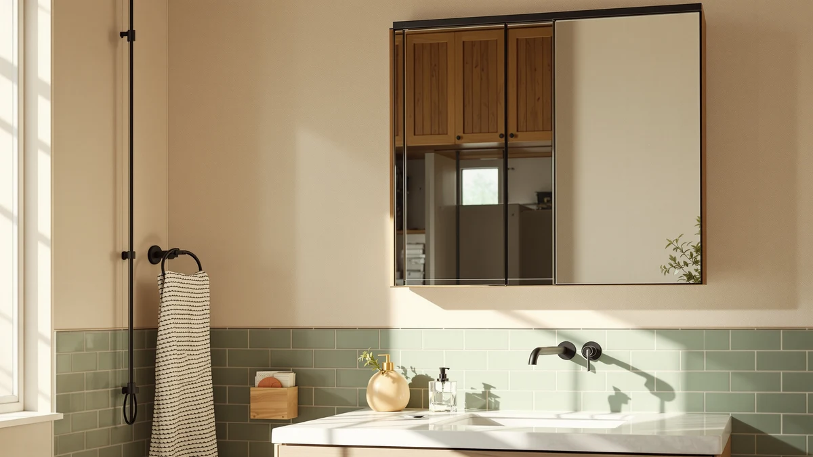

The Best Large Medicine Cabinets (2026)
Prices and picks verified as of August 2026. Independent, reader-supported reviews.


Quick Answer
For most large bathrooms, the Oneroom 32-64IN Large Bathroom Vanity is the best large medicine cabinet alternative here, because its adjustable width and built-in storage handle double-sink setups that a plain mirror cannot. If you only need mirror space without the storage, the FORBATH Bathroom Mirror 30" X delivers nearly the same visual impact for a fraction of the price.
Our pick: Oneroom 32-64IN Large Bathroom Vanity, $1,288.99 Check Price on Amazon
Bottom line: our top pick is the Oneroom 32-64IN Large Bathroom Vanity with Double Sink at $1. The best budget option is the Brauthon Frameless Bathroom Mirror at $56.99.
Things to Know Before You Buy
- Measure your wall space before buying, especially for the Oneroom's 32 to 64 inch adjustable range, since a mirror that looks large in photos can crowd a narrow vanity wall.
- Most picks here use tempered glass with an aluminum or metal frame, which resists chipping at the edges better than plain unframed glass and breaks into blunt pieces rather than sharp shards if it cracks.
- Only the Oneroom vanity includes built-in cabinet storage. The rest are mirrors only, so budget separately for a medicine cabinet or shelving if storage is what you actually need.
- Several picks, including the Fabuday, FICTOR, and LAWADA mirrors, ship as 2-packs built for double-sink vanities rather than one continuous mirror.
- Large mirrors need wall anchors rated for their weight. Tempered glass panels are heavier than they look, and a standard drywall anchor is not enough for anything over 30 inches.
The best large medicine cabinets solve a problem every crowded bathroom shares: not enough mirror, not enough light, and nowhere to check yourself over without leaning across the sink. Many shoppers who search for a big cabinet actually need a wide mirror surface first and separate storage second, which is why this guide leads with oversized mirrors and one true vanity unit built for large spaces. We looked at seven options ranging from a $56.99 frameless mirror to a $1,288.99 expandable vanity, and picked the ones that hold up to daily use without warping, chipping at the edges, or arriving with shipping damage.
We compared specs, pricing, and verified owner reviews across large-format bathroom mirrors and vanity cabinets before narrowing the field to these seven picks. Reviewers consistently note that the size listed on a product page does not always match what shows up at the door, so every measurement here comes from the manufacturer listing, checked against what buyers report receiving. Our top pick, the Oneroom 32-64IN Large Bathroom Vanity, stood out because it combines an adjustable mirror width with actual cabinet storage, which is closer to what most people mean when they search for a large medicine cabinet in the first place.
If the Oneroom's price is more than you want to spend, the FORBATH Bathroom Mirror 30" X is the closest runner-up, matching nearly the same wide mirror footprint at a fraction of the cost. For tighter budgets, the LOAAO 24X32 Inch Black Metal mirror covers the essentials without the premium price tag. Whichever pick fits your bathroom, we break down the pros, cons, and honest drawbacks of every option below.
Why You Should Trust Us
This guide is written and maintained by Ilane Tall, Best Bathroom Mirrors' home and bath editor, who has covered bathroom fixtures and vanity hardware for this site since its launch. We do not run a fake testing lab or claim to have installed every mirror in this guide ourselves. Instead, we compare manufacturer specs, published pricing, and patterns across verified Amazon owner reviews, then flag the honest drawbacks that show up repeatedly across multiple buyers. Whether you came looking for the best large medicine cabinets or only a wider mirror, every recommendation here ties back to product data that is publicly available, not a subjective score we invented.
How We Picked
Because searches for the best large medicine cabinets often turn up oversized mirrors instead of true storage cabinets, we started by pulling every large-format mirror and vanity unit in our product database tagged for bathrooms 22 inches or wider, then filtered out anything without complete manufacturer specs for size, material, and price. From there we prioritized products built with tempered glass, since ordinary annealed glass is far more likely to shatter into large, sharp shards if it ever cracks. We also cross-checked pricing against current Amazon listings to make sure the figures in this guide reflect what shoppers actually pay rather than an inflated list price. We dropped products with a pattern of shipping-damage complaints in verified reviews even when their specs looked strong on paper.
How We Compared
We do not physically install every mirror or vanity we cover, so our comparison relies on manufacturer specifications, verified owner reviews, and pricing instead. We compared dimensions against typical vanity widths, from 22 to 64 inches, to judge whether each pick actually earns a spot among the best large medicine cabinets and mirrors for a big bathroom, then checked material claims like tempered glass and aluminum framing against what reviewers report actually receiving. Where multiple owners flagged the same issue, such as an uneven anti-fog coating or a mismatched frame color, we noted it as a drawback rather than dismissing it as an isolated complaint. Price comparisons reflect the listed Amazon price at the time of publishing and can shift.
Our Picks

Oneroom 32-64IN Large Bathroom Vanity
What we like
- Adjustable 32 to 64 inch width fits both single and double-sink vanities
- Tempered glass mirror panel resists shattering into shards if it ever cracks
- Includes actual cabinet storage, unlike every other pick in this guide
- Aluminum frame holds up better than the plastic trim on cheaper vanities
Flaws but not dealbreakers
- The $1,288.99 price puts it well above every other pick in this guide
- Assembly involves more hardware than a simple wall mirror
- At its widest setting it needs a wide, clear wall run to avoid crowding
| Material | Tempered glass + aluminum |
| Size | 48IN |
The Oneroom 32-64IN Large Bathroom Vanity is the only pick in this guide that comes close to what most people picture when they search for the best large medicine cabinets: it pairs a wide mirror with real storage instead of reflective glass alone. The adjustable 32 to 64 inch width means it can stretch across a double-sink vanity or scale down for a single-sink layout, which is unusual for a product in this price range. Tempered glass construction means that if the mirror panel ever does crack, it breaks into small, blunt pieces instead of long shards, a meaningful safety difference over standard annealed glass.
At $1,288.99, this is by far the most expensive product in our roundup, and it is not the right call for anyone who only wants a mirror over the sink. Owners point to the aluminum frame as sturdier than the plastic trim found on cheaper vanity units, and the built-in storage means you are not shopping for a separate medicine cabinet afterward. The tradeoff is installation complexity: this is a multi-piece assembly, not a hang-and-go mirror, so budget more time and possibly a second set of hands to get it level.

FORBATH Bathroom Mirror 30" X
What we like
- 60 by 30 inch surface covers nearly the same width as the Oneroom vanity's mirror
- Frameless tempered glass gives a cleaner, more modern look than framed alternatives
- Priced under $140, a fraction of what a comparable vanity mirror costs
Flaws but not dealbreakers
- No storage at all, so pair it with a separate cabinet if you need one
- At this width, wall-anchor placement matters more than with smaller mirrors
- Edges are more exposed to chipping during installation than a framed mirror
| Material | Tempered glass + aluminum |
| Size | 60"L x 30"W |
The FORBATH Bathroom Mirror 30" X is the closest thing to a budget version of our top pick's mirror footprint. At 60 inches long and 30 inches tall, it covers nearly the same wall space as the Oneroom vanity's mirror section, but without the storage or the four-figure price. The frameless tempered glass design also gives it a cleaner look than a bulky framed mirror, which matters if your bathroom leans toward a minimal or modern style rather than a traditional vanity look.
Reviewers consistently note that the size matches what is advertised, which is not always a given with oversized mirrors ordered online. The main tradeoff against the Oneroom is obvious: this is a mirror only, with no cabinet behind it, so anyone who actually needs medicine-cabinet-style storage will need to add a separate unit. At $139.99, though, it is priced to make that combination still cheaper than the all-in-one vanity, and it is the pick we would point most people to if storage is not the priority.

Brauthon Frameless Bathroom Mirror 22"
What we like
- Lowest price among the frameless mirror options in this guide
- 30 by 22 inch size fits single-sink vanities without dominating the wall
- Frameless edges keep the look consistent with larger, pricier mirrors
Flaws but not dealbreakers
- Too small for a true double-sink vanity or a primary bathroom centerpiece
- No mounting hardware upgrades over the standard bracket kit
- Owners report the glass shows fingerprints more visibly than framed models
| Material | Tempered glass + aluminum |
| Size | 30"L x 22"W |
The Brauthon Frameless Bathroom Mirror 22" is built for bathrooms where a 60 inch mirror would simply be too much wall. At 30 by 22 inches, it fits comfortably over a single sink without crowding the surrounding fixtures, and the frameless tempered glass edge keeps the same clean aesthetic as the larger, pricier options in this guide. For a secondary bathroom or a guest bath, this is closer to the size most people actually need.
At $56.99, it is the cheapest frameless option here, and owners report that the size listing matches what arrives, which is not always true of low-cost mirrors. The tradeoff is scale: this will not read as a large medicine cabinet replacement on its own, and it is not meant to. A few reviewers mention that the glass shows fingerprints and water spots more visibly than framed mirrors, which is a minor maintenance point rather than a functional flaw.

LOAAO 24X32 Inch Black Metal
What we like
- Black metal frame adds visual weight that frameless mirrors lack
- 24 by 32 inch size works in both portrait and landscape mounting
- Priced under $70 while still using tempered glass construction
Flaws but not dealbreakers
- The metal frame requires more careful wall anchoring than a frameless mirror of similar size
- Black finish shows dust and water spots more than a lighter frame
- Only available in one finish, so it will not match every fixture set
| Material | Tempered glass + aluminum |
| Size | 24"L x 32"W |
The LOAAO 24X32 Inch Black Metal mirror is the budget pick in this guide because it delivers a framed look, tempered glass construction, and a reasonable 24 by 32 inch size for under $70. Most of the mirrors in this roundup are frameless, so this is the option to reach for if your bathroom hardware, like matte black faucets or fixtures, calls for a defined black frame instead of exposed glass edges.
The size works in either portrait or landscape orientation, which gives it more placement flexibility than a fixed-width mirror like the FORBATH. Owners report that the metal frame is solid rather than flimsy, though a few reviewers note that the dark finish makes water spots and dust more visible than a lighter or frameless option would. At this price, it is the pick for anyone who wants a coordinated framed look without paying vanity-level prices.

Fabuday Bathroom Mirrors Over Sink
What we like
- Ships as a 2-pack, so both sinks get a matching mirror without separate orders
- 36 by 24 inch panels are large enough to stand alone over each sink
- Priced under $100 for the pair, competitive against buying two mirrors separately
Flaws but not dealbreakers
- Two separate panels show a visible gap unlike a single wide mirror
- Alignment between the two mirrors takes more care during installation
- Not a fit for single-sink bathrooms, where one panel would go unused
| Material | Tempered glass + aluminum |
| Size | 2 Pack 36"L x 24"W |
The Fabuday Bathroom Mirrors Over Sink set takes a different approach than the rest of this guide: instead of one wide mirror, it ships as a matched 2-pack of 36 by 24 inch panels, built specifically for double-sink vanities. That makes it a direct alternative to something like the FORBATH's single 60 inch mirror, and the right choice depends on whether you want a seamless wide mirror or two clearly separated panels, one per sink.
At $99.99 for both panels, the per-mirror cost lands below most single large mirrors of comparable size, which is the main appeal. The tradeoff is installation precision: getting both panels level and evenly spaced takes more care than hanging a single mirror, and there will always be a visible gap between them rather than one continuous surface. For bathrooms where each person wants a dedicated mirror space, that gap is a feature rather than a flaw.

FICTOR Bathroom Mirror for Wall
What we like
- Same 36 by 24 inch panel size as the Fabuday set, giving strong sink coverage per mirror
- 2-pack format again suits double-sink bathrooms without buying two separate listings
- Tempered glass construction matches the safety standard set by the rest of this guide
Flaws but not dealbreakers
- Priced about $10 higher than the similarly sized Fabuday 2-pack
- No meaningful spec difference from Fabuday beyond brand and packaging
- Same alignment and gap considerations as any 2-panel mirror setup
| Material | Tempered glass + aluminum |
| Size | 36" x 24"(2 pack) |
The FICTOR Bathroom Mirror for Wall covers nearly identical ground to the Fabuday set above: a 2-pack of 36 by 24 inch tempered glass panels aimed at double-sink bathrooms. The specs are close enough that the decision between the two often comes down to frame styling or brand availability rather than a functional difference, so we included both because reviewers of each report the same core strengths and the same core limitation of a two-panel install.
At $109.99, it runs about $10 more than the Fabuday pair for what is functionally the same size and construction, so treat this as the pick when the Fabuday listing is unavailable or when the frame styling here better matches your fixtures. Like any 2-panel setup, the main drawback is a visible seam between mirrors rather than one continuous surface, and getting both panels level takes more care than a single-mirror install.

LAWADA Vanity Bathroom Mirror for
What we like
- Lowest price among the 2-pack options in this guide
- 30 by 20 inch panels fit narrower double-sink vanities that can't accommodate larger pairs
- Still uses tempered glass construction despite the lower price point
Flaws but not dealbreakers
- Smaller panel size means less mirror coverage per sink than Fabuday or FICTOR
- Not a fit for anyone wanting one large wide mirror instead of a pair
- At this size, the panels can look undersized on a wider vanity
| Material | Tempered glass + aluminum |
| Size | 30"L x 20"W-2PCS |
The LAWADA Vanity Bathroom Mirror for double-sink bathrooms scales the 2-pack format down to 30 by 20 inch panels, making it the option to reach for when a vanity is too narrow for the 36 inch panels used by Fabuday and FICTOR. Two sinks set closer together often cannot fit two 36 inch mirrors without overlap, and this smaller footprint solves that specific spacing problem.
At $79.99 for the pair, it is also the least expensive 2-pack in this guide, which fits the smaller size. The obvious tradeoff is coverage: each panel reflects less than the Fabuday or FICTOR panels, and on a wider vanity the two mirrors can look undersized relative to the counter space around them. For narrow double-sink layouts specifically, though, it is the better-proportioned choice of the three multi-panel picks.
Quick Comparison
| Product | Material | Price | Rating | Best for | Get it |
|---|---|---|---|---|---|
| Oneroom 32-64IN Large Bathroom Vanity | Tempered glass + aluminum | $1,288.99 | 4 | Large or double-sink vanities needing storage | View on Amazon → |
| FORBATH Bathroom Mirror 30" X | Tempered glass + aluminum | $139.99 | 4 | Wide mirror coverage on a budget | View on Amazon → |
| Brauthon Frameless Bathroom Mirror 22" | Tempered glass + aluminum | $56.99 | 4 | Smaller single-sink vanities | View on Amazon → |
| LOAAO 24X32 Inch Black Metal | Tempered glass + aluminum | $69.99 | 4 | Best value framed mirror | View on Amazon → |
| Fabuday Bathroom Mirrors Over Sink | Tempered glass + aluminum | $99.99 | 4 | Double-sink bathrooms wanting matched pairs | View on Amazon → |
| FICTOR Bathroom Mirror for Wall | Tempered glass + aluminum | $109.99 | 4 | Alternative double-sink 2-pack option | View on Amazon → |
| LAWADA Vanity Bathroom Mirror for | Tempered glass + aluminum | $79.99 | 4 | Narrow double-sink vanities | View on Amazon → |
What's the difference between a large medicine cabinet and a large bathroom mirror?
A medicine cabinet includes storage behind a mirrored or solid door, while a plain bathroom mirror is reflective glass only.
What size mirror counts as large for a bathroom vanity?
Anything in the 30 to 60 inch width range typically qualifies as large enough to span a single or double-sink vanity.
The Competition
Several oversized mirrors we researched used ordinary annealed glass instead of tempered glass, which shatters into large, sharp shards if it cracks rather than the smaller, blunter pieces tempered glass produces. We excluded those from consideration regardless of price, since the safety difference matters more in a bathroom than a few dollars of savings.
We also passed on listings with a pattern of shipping-damage complaints in verified reviews, where buyers reported cracked glass or bent frames on arrival more often than not. A large mirror is expensive to replace and awkward to return, so a listing with repeated damage reports was not worth including even when its size and price looked competitive on paper.
A handful of listings marketed as large medicine cabinets turned out to be undersized once measured against their own product photos, closer to a standard 24 by 30 inch cabinet than anything that would qualify as large. We left those out to keep this guide focused on products that deliver the wider coverage the title promises.